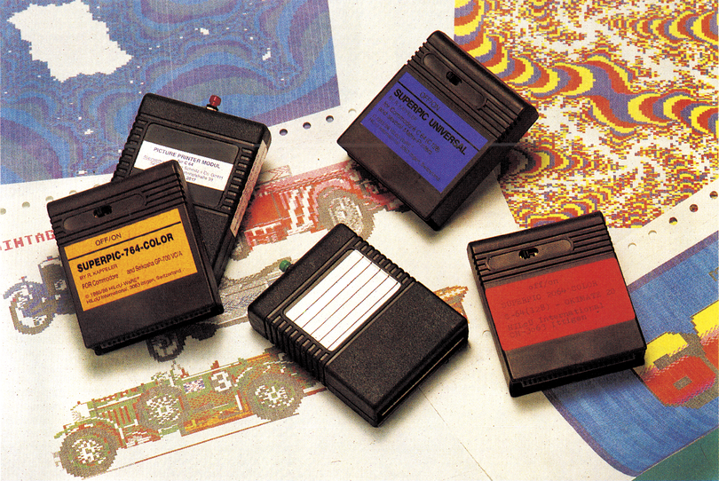

Hardcopy per Knopfdruck
Wie gut sind die Hardcopy-Module, die jeden aktuellen Bildschirminhalt ausdrucken sollen? Immerhin sind damit farbige Hardcopies vom HiRes-Bildschirm möglich. Wir nehmen fünf dieser Module unter die Lupe und sagen Ihnen, in welchen Fällen sich eine Anschaffung lohnt.

Was tun, wenn man in einem Spiel die Grafik seiner Träume entdeckt, nachdem man endlich einen atemberaubenden Level erreicht hat? Guter Rat ist dann oft teuer, wenn man versucht, die Grafik auf einen Drucker auszugeben. Bei HiRes-Grafiken kann ein Reset zunächst ganz hilfreich sein. Denn nach dem Reset existiert die Grafik noch im Speicher. Nur muß der richtige Speicherbereich erst einmal gefunden werden. Haben Sie ein Programm wie Hi-Eddi oder Hardmaker, ist das Aufspüren der Grafik ein leichtes. Aber es stellt sich immer noch die Frage, wie eine Hardcopy von der Grafik angefertigt werden kann. Denn einfache Hardcopy-Programme können keine Farben in entsprechende Graustufen umsetzen, von eventuell vorhanden Sprites, die nach dem Reset nicht mehr sichtbar sind, ganz zu schweigen. Noch komplexer gestaltet sich das Problem, wenn der Ausdruck eines normalen Textbildschirms, womöglich mit einem veränderten Zeichensatz und raffinierter Farbgebung durch Rasterzeilen-Interrupt gefragt ist.
Abhilfe schafft da wohl am besten ein Hardcopy-Modul. Wir stellen Ihnen fünf Modelle vor, die auf einen simplen Knopfdruck hin den momentan sichtbaren Bildschirminhalt ausdrucken. Vorausgesetzt natürlich, das Modul ist auf den angeschlossenen Drucker abgestimmt.
Hilcu-Ware aus der Schweiz bietet vier Hardcopy-Module für die verschiedensten Drucker an. Die Angebotspalette reicht von Universalmodulen, die mit gängigen Matrixdruckern zusammenarbeiten, bis zu Modulen für Farbdrucker wie dem Okimate 20 und dem Seikosha GP-700 VC/A.
Das Verfahren zum »Sichern« der gewünschten Grafiken funktioniert bei allen Modellen in der gleichen Art und Weise. Zuerst einmal ist es nötig, das jeweilige Modul vor dem Einschalten des Computers in den Expansion-Port des Computers zu stecken. Ist das Modul ausgeschaltet, so kann man getrost seinen Computer in Betrieb nehmen, um mit ihm in gewohnter Weise zu arbeiten, bis eine Grafik auf dem Bildschirm gesichtet wird, die einem das Herz höher schlagen läßt. Dann sollte man das Modul aktivieren. Die Grafik erstarrt daraufhin auf dem Bildschirm. Sollte das Bild durch den Reset verschwunden sein, so kann mit den Cursor-Tasten der Speicher nach der Grafik durchsucht werden. Dabei kann auch eine durch Rasterzeilen-Interrupt zweigeteilte Grafik erkannt werden.
Da nicht alle Farbkombinationen eine sinnvolle Graustufen-Hardcopy ergeben, können über vier Tasten die Farben verändert werden. Jetzt kann man die Suche fortsetzen und nach Sprites Ausschau halten. Hat man alles zusammengesucht, was in der Regel nur kurzer Zeit bedarf, beglückwünscht einen der Computer mit der Meldung »You got it!« — Sie haben es geschafft. Dieser Meldung folgt die Aufforderung, das Modul wieder auszuschalten und der Computer rechnet die Grafik in eine 32-KByte-Bitmap um. Der weitere Ablauf bis zur fertigen Hardcopy hängt nun vom Druckertyp ab, für den das Modul konzipiert wurde. Bei den Farbdruckern stehen zunächst vier bis fünf verschiedene Größen zur Auswahl. Man kann zwischen Hardcopies im Briefmarken- und Riesen-Format wählen. Beim Seikosha-Drucker kann man sich für den Ausdruck mit 7 oder 15 Farben entscheiden, beim Okimate sind es bis zu 14. Wer seinen Drucker besonders quälen möchte oder, aufgrund eines besonders ausgezehrten Farbbandes muß, kann den Doppeldruck einschalten. Das sollte man sich jedoch gut überlegen, da der Doppeldruck-Modus nicht mehr ausgeschalten werden kann. Hat man sich nun so weit durch alle Menüs gearbeitet und den »Wissensdurst« des Moduls gestillt, setzt sich der Druckkopf in Bewegung. Die einzige Abbruchmöglichkeit bietet die <RESTORE>-Taste. Der Ausdruck von Farbgrafiken dauert recht lange, da jede Zeile bis zu viermal gedruckt wird.
Zu guter Letzt hat man noch die Möglichkeit, die Grafiken auf Diskette zu speichern, die dann einen enormen Platz von 134 Blocks belegen. Die Grafiken können auch ohne Modul geladen und wie ein Programm gestartet werden. Sie können auch ein zweites Mal ausgedruckt werden, da das Bild zusammen mit dem Druckprogramm gespeichert wird.
Was fehlt, ist etwas mehr Anwenderfreundlichkeit. So können weder Directories angeschaut, noch Diskettenkommandos gesendet werden. Fehleingaben können nachträglich nicht mehr rückgängig gemacht werden, und wer noch mal einen abschließenden Blick auf die Grafik werfen möchte, kann das leider nur nach erfolgtem Ausdruck. Auch die angewählten Farben lassen sich hinsichtlich ihrer Umsetzung in Graustufen und Wirkung auf dem Papier nicht überprüfen. Versucht man diesen Mangel dadurch zu beseitigen, das Bild zu speichern und anschließend wieder zu laden, hat man auch keinen Erfolg. Der Programmteil zum Färben der Grafik wird dann nämlich übersprungen. Die Farbdrucker-Module von Hilcu kosten 149 Mark, die Universal-Module 139 Mark.
Mehr Bedienungsfreundlichkeit bietet das Picture-Printer-Modul von Elektro Schmitz. Die Übernahme der Grafik erfolgt in gewohnter Weise, nur auf Sprites wurde verzichtet. Ein Menü präsentiert alle verfügbaren Hauptfunktionen. Hier kann man auch Grafiken laden. Vorgesehen sind Koala- und Doodle-Format. Weitere Formate wären zwar begrüßenswert, sind aber nicht unbedingt notwendig, da man ja aus jedem Grafikprogramm das angezeigte Bild per Knopfdruck »stibitzen« kann. Auch das Directory einer Diskette kann man ansehen, und nachschauen, ob noch genügend Platz vorhanden ist. Das im Speicher befindliche Bild kann auch im Doodle-Format auf Diskette gespeichert werden. Um sich vom ordnungsgemäßen Zustand des Bildes zu überzeugen, kann man es vor dem Druck noch mal betrachten. Leider kann man die Farben nicht zugunsten eines besseren Kontrastes variieren. Vorbildlich ist die Druckerroutine. Man hat die Auswahl zwischen MPS 801 und kompatiblen, Panasonic, Epson, Epson mit Görlitz-Interface, Star und kompatiblen, Melchers CP-80 X und einem Okimate 20. Hat man sich für den richtigen Drucker entschieden, kann der Ausdruck beginnen. Ein Pfeil gibt immer die momentane Druckposition an. Die Grafik wird mit vorbildlicher Graustufenumsetzung im DIN-A5-Format zu Papier gebracht. Allerdings kann keine andere Größe eingestellt werden. Das Universal-Modul kostet 99 Mark.
Für Besitzer von Farbdruckern sind die Module zweifellos interessant. Besitzer eines Schwarzweiß-Druckers müssen sich notgedrungen mit Graustufen zufrieden geben, was manchem noch so eindrucksvollen Bild die Wirkung nimmt.
(S. Vilsmeier/og)Info: Hilcu Ware, 3063 Ittingen, Schweiz; Elektro Schmitz GmbH, Bahnhofstr 31, 5830 Schwelm